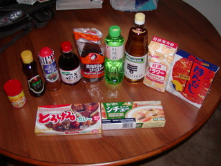
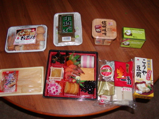

« Ocean Beach へ Go! | メイン | It's STILL new year's eve. »
2004年12月31日
Japan Town へ！
この時期が雨期なのは聞いていたけどもこんなに雨が降るとは・・・。
先週末からほとんど毎日雨が降っている。
アーチェリーもあまりできず映画館、スーパー、家を行き来しているだけ(それはそれで楽しいんだけど)なのでちょっとお買い物へ。
目指すは Japan Town だ。
Japan Town はユニオンスクエアのあたりからmuniバスで15分くらい。
コンクリートで出来たおかしな五重塔を横目に通り過ぎたことは何度かあるけど降りるのは今日が初めて。
紀伊国屋とかもあるらしいけど今日の目的はNijiya market。日本製の調味料、食材が買えるという噂。
#ちなみに今日たどりつくまでNINJA marketかと思ってた
バスを降りるとすぐに見つかった。
サンフランシスコに住む日本人はみんな来るであろう Nijiya。Ninjaではない
おぉ、これは良い！
日本のスーパーとほとんど変わらない。値段がドルで表示されてるくらい。
うれしくなって色々買い込んでしまった。

まずは近所のスーパーで買えない調味料一通り
コンソメ:いや、これはアメリカのスーパーでも買えるか？
ごま油:カドヤのもの。日本で良くうってるのと同じね
イタリアンドレッシング:もちろん近所のスーパーでもうってるけどなんかドロッと濃いので
そばつゆ:あとで見ると冷蔵庫にちょっと残ってました thanks Ako & Danny
お好みソース:たまにはお好み焼きでも
料理酒:なにかと使いますね
お酢:これも基本
小麦粉:近所でもうってるけどなんか色がいやに黄色いので慣れてるものを
ほんだし:何かと便利
あぁ、肝心のみりん買い忘れた
{kind=link}

食べ物色々
おでん:今日はおでんにしよう！
年越しそば:これで細く長く生きられそう
味噌:たまには味噌汁もね
お茶:コーヒー、コーラばっかりじゃ死にます
数の子:これがないと新年は訪れません
おせち:Nijiya特製おせちをゲット！
もち:これもお正月の必需品
こうや豆腐:なんとなく食べたくなった
{kind=link}
ついつい買い込みすぎて両手がふさがり傘がさせなくなる自体・・・。でも充実した食生活を送れそう。
投稿者 yusuke : 2004年12月31日 12:17
トラックバック
このエントリーのトラックバックURL:
http://yusuke.homeip.net/diary/mt/mt-tb.cgi/156
コメント
まあ、ずいぶん買いましたね。お料理がんばってください。
投稿者 亜 : 2005年01月03日 01:35
はい。いつ鉄人になれるかわかりませんが精進します。
投稿者 裕介 : 2005年01月03日 02:28
NIJIYAかなり使えますよね〜。なつかし〜！
すでにSFにいたのが夢のようです。。。(>_<)
SF日記楽しみにしています♪
投稿者 ako : 2005年01月06日 19:23
Nijiyaいいねー。どうしても whole foods market は日本っぽいモノうってないし。
今度はチャイナタウンに買い出しに行ってみようかな？
投稿者 裕介 : 2005年01月07日 15:19